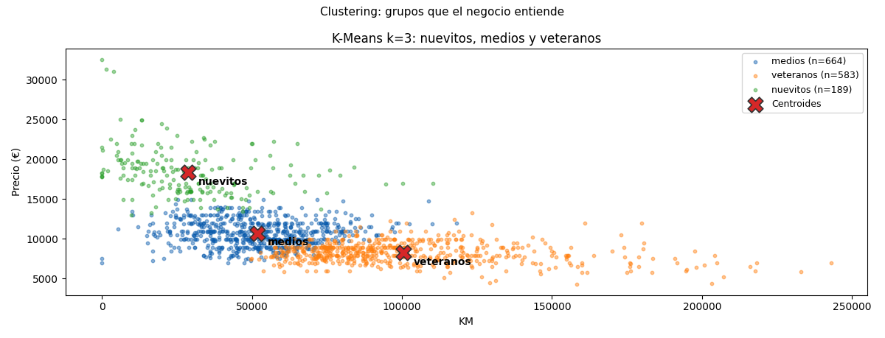

Unidad 7 · Agrupamientos (clustering) · Lección 0029
K-Means: 3 segmentos de Corolla
Win de hoy: segmentar en 3 con K-Means sobre KM/Price/Edad: nuevitos (189: 18.342 €), medios (664: 10.716 €) y veteranos (583: 8.280 €), con centroides visibles.
1 · La idea: centroides que negocian
K-Means
elige k centros (centroides),
asigna cada auto al más cercano, recalcula los centros y repite hasta que nadie se muda. Detalles que importan:
n_init=10 (10 arranques, quedarse con el mejor: el final depende del inicio) y datos
estandarizados (0028, o KM habla solo).
from sklearn.cluster import KMeans
km = KMeans(n_clusters=3, n_init=10, random_state=42).fit(Xs)2 · Los 3 segmentos (perfiles que el negocio entiende)
| Segmento | Autos | Precio medio | KM medio | Edad media |
|---|---|---|---|---|
| Nuevitos | 189 | 18.342 € | 28.775 | 20 meses |
| Medios | 664 | 10.716 € | 51.794 | 54 meses |
| Veteranos | 583 | 8.280 € | 100.488 | 70 meses |
Cada centroide es “el auto típico” del segmento. La concesionaria ya puede hablar: garantía para nuevitos, financiación para medios, repuestos para veteranos. Clustering que no se cuenta, no sirve.
3 · Límites honestos (k, esferas, outliers)
- k lo ponés vos: 3 fue elección (negocio + codo en 0031), no verdad revelada.
- Supone esferas: grupos alargados o anidados los parte mal (DBSCAN los abraza: 0030).
- Outliers tiran centroides: la media es sensible (el Corolla de 32.500 € arrastra).
4 · Figura: los 3 segmentos y sus X

Regenerar la figura (mismo resultado versionado en assets/img/toyota/):
python scripts/make_figures.py --only kmeans-segmentos5 · Quiz (auto-chequeo inmediato)
6 · Fuente primaria y cierre
Para profundizar (1 fuente): Tan, Steinbach & Kumar, Introduction to Data Mining — capítulo de clustering (K-Means) (dmbook, también en RESOURCES.md del curso).
¿Algo no quedó claro? Preguntame al agente: por qué n_init importa, cómo nombrar segmentos, o cuándo K-Means miente. Esa pregunta vale más que releer.